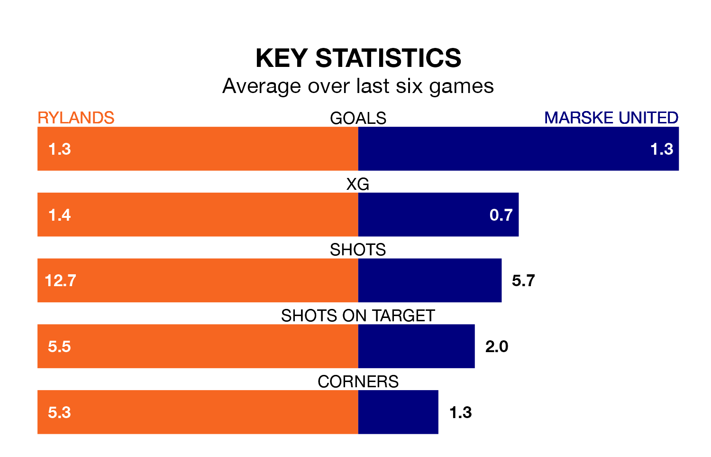

Mid-season relegation candidates Marske United face a challenge away against high-flying Rylands on Tuesday.
Marske United are 19th in the Northern Premier League table, and have picked up seven wins and no draws in their 22 games to date.
Rylands, meanwhile, are second in the standings with 48 points, having won 13 and drawn nine of their first 25 matches, and are six points behind table-toppers Radcliffe Borough.
With 30 goals in 22 games so far this season, Marske are scoring at below the league average rate with 1.4 goals per game. And they are conceding more than average, letting in 53 goals at a rate of 2.4 per game.
Rylands, meanwhile, are average scorers, with 1.6 goals per game. They have conceded 1.0 goal per game.
Over the last two years, Rylands and Marske have played each other twice. They won one each.
Their last meeting was on March 28, when Marske won 2-0 at home.
The hosts are in mixed form in Northern Premier League, with two wins and three draws from their last six games.
With three wins and three losses over that period, United's form is similar – they have both taken nine points from 18.
Rylands's last match was on Saturday, a 1-0 win against Whitby Town.
Marske lost 2-0 against Morpeth Town last time out, on December 30.
Updated: 14:53 (UTC), 16/01/24